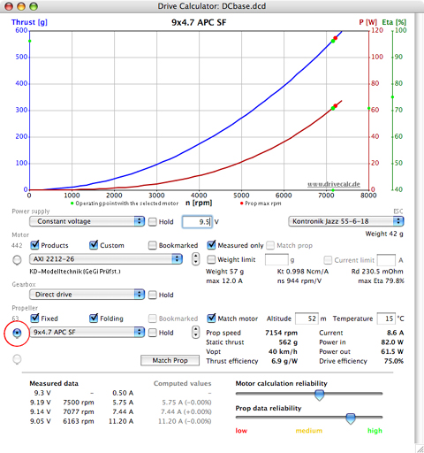

Initially, the output data may be viewed in two different graphs displaying either the motor data or propeller data. When the radio button to the left of the motor popup list menu is selected, the graph displays motor data. When the radio button to the left of the propeller popup list menu is selected, the graph displays propeller data.

Additionally, a third graph view, also displaying propeller data, becomes available once the 'Match prop' button has been selected. It provides a second propeller graph with special functions that can be used to select and compare motors (see Finding matching motors for the selected power supply and propeller below).